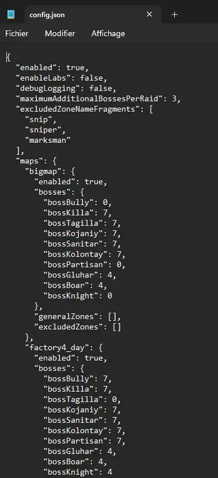
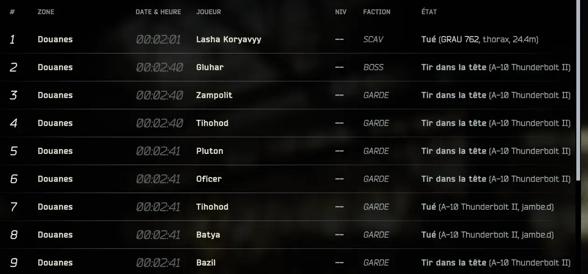

Bosses Extravaganza
- Downloads
- 2,785
- Favourites
- 21
- Mod lists
- 24
Bosses Extravaganza
Bosses Extravaganza lets vanilla THE CITY bosses spawn on additional maps while preserving their original followers, escorts and spawn behavior.
The goal is not to replace vanilla boss spawns, but to add extra boss encounters on top of them. Vanilla bosses, modded bosses and existing map spawns are preserved.
Features
- Configurable boss spawn chances per map
- Configurable maximum number of additional bosses per raid
- Preserves vanilla boss spawns
- Preserves boss guards, escorts and followers
- Preserves modded boss spawns
- Boss-specific zone rules and overrides
- Smart zone validation using real spawn points
- Optional exclusion of problematic zones
- Special handling for heavy boss groups such as Kaban and Glukhar
- Server-side only
Gameplay Philosophy
Bosses Extravaganza is designed to create more intense and unpredictable raids without randomly dumping bosses anywhere.
Heavy boss groups are restricted to strong, believable combat zones. Solo bosses have more flexibility. The mod tries to avoid invalid or broken spawn zones and keeps boss placement configurable.
The **DEFAULT ** config is set as following, but you can change everything at your liking :
- Maximum 3 additional boss group per raid (configurable)
- Smaller bosses usually have a 7% chance (configurable)
- Large boss groups such as Glukhar, Kaban and the Goons usually have a 4% chance (configurable)
- Labs and Labyrinth are disabled by default (configurable)
- Vanilla spawns are preserved
Important
A value of 0 in the config means Bosses Extravaganza will not add that boss on that map. It is intended to avoid dupplicates of bosses. For example , Reshalla is 0 on Customs - it means SPT will use vanilla spawn behavior (and whatever %chance you setted with SVM or other ways. Partisan is 0% on Wood, Customs, Lighthouse, Shoreline.. and so on..
Example:
With the 0 value, the map “Customs” (bigmap) can still spawn Reshala(bossBully), Partisan, and Goons(bossKnight) normally (either with vanilla values, SVM, or other ways of your choice). Bosses Extravaganza may additionally roll Killa, Sanitar, Kaban, Glukhar, etc., depending on your config. If a boss is already present in the raid data, the mod avoids adding a duplicate of that same boss. Same thing for Tagilla on Factory just below. 0 means the mod doesn’t touch the spawn value as he is the native vanilla boss on this map.

##++++++++++++++++++++++++++++++++++++++++++++++++++++++++++++++++
Installation
Extract the archive into your SPT folder. Expected path:
SPT/user/mods/BossesExtravaganza/
The folder should contain:
BossesExtravaganza.dll
config.json
Compatibility
Built for SPT 4.0.13.
This mod is server-side only. ##+++++++++++++++++++++++++++++++++++++++++++++++++++++++++++++++++
Recommanded Mods :
I highly recommand this mod to be used along :
- Dynamic Maps : https://forge.sp-tarkov.com/mod/1431/dynamic-maps
and
- Boss Notifier : https://forge.sp-tarkov.com/mod/2543/bossnotifier
and you might want some airstrike support sh%t coming from the sky to help ya if some combo of bosses are spawning together (enjoy having Kaban, Glukhar, Reshalla, and Kollontay ((AND THEIR 24 COMBINED GUARDS!!!)) all spawning at Fortress (scav base) on Customs lmao.. but that’s totally up to you !


ENJOY !
Version
1.0.0
R E L E A S E 1.0